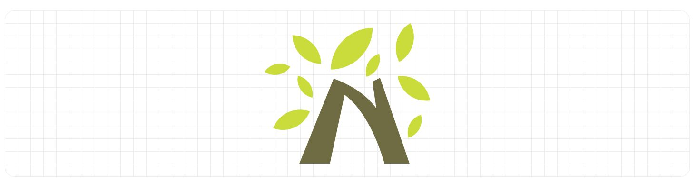
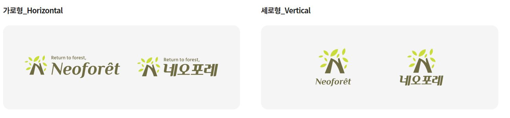
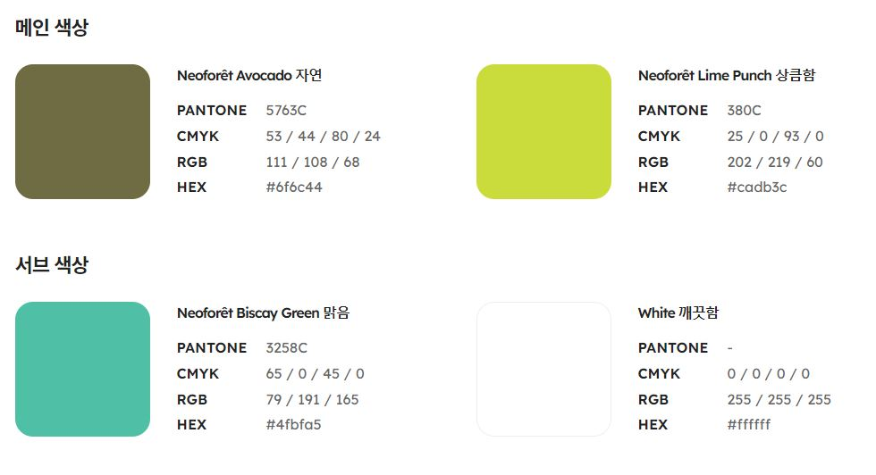

- 컨셉
-
네오포레의 영문 N을 나무로 형상화 한 디자인으로 다양한 크기의 나뭇잎을 감각적으로 배치하여 숲으로 돌아가는 종이 네오포레의 가치를 담아 자연친화적인 의미를 나타내었습니다.
-
심볼마크
BI 다운로드
-
심볼마크는 대내외적으로 네오포레의 이미지를 대표하는 가장 핵심적인 요소이므로 일관된 이미지를 위해 활용시에는 반드시 원본 데이터를 활용해야 합니다.
-

- 시그니처
-
시그니처는 심볼마크와 로고타입이 일정한 규칙에 의해 가로, 세로로 조합 된 것을 말하며 적용매체의 레이아웃이나 상황에 따라 적절한 것을 선택하여 사용합니다.
시그니처의 사용 시 각각의 요소들의 비례나 간격, 크기를 임의로 변형할 수 없으며 색상 역시 지정 된 색상 규정을 준수하여야 합니다.

- 전용 색상
-
네오포레의 아이덴티티를 나타내는 2가지 메인 색상과 네오포레가 추구하는 가치를 나타내는 2가지 서브 색상으로 구분되어 있습니다.
